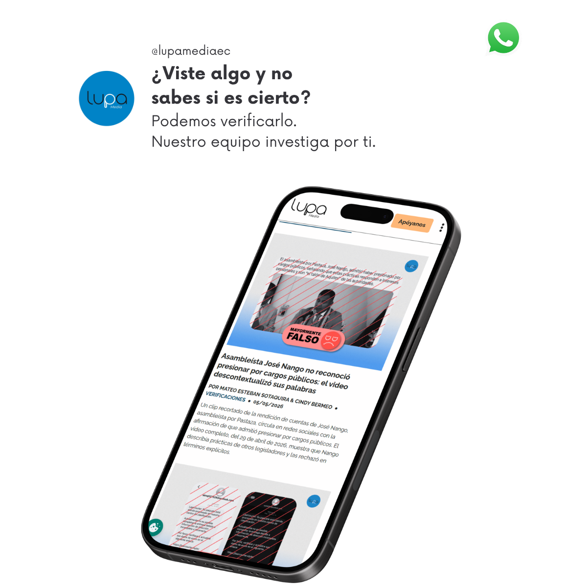

Lupa Media
Lupa Media es una organización ecuatoriana de periodismo de verificación e investigación. Combate la desinformación con evidencia, educación y análisis riguroso. Su sitio es la plataforma central desde la que llega a miles de ciudadanos cada semana.
Cliente
Lupa Media
Servicio
Desarrollo Web
Industria
Medios / Periodismo
País
Ecuador
Última publicación
Reto
Construir una plataforma editorial que soporte verificaciones, investigaciones y programas educativos sin que la tecnología se interponga en la misión.
Lupa Media nació del GNI Startups Lab Hispanoamérica — el programa de incubación de medios de SembraMedia y Google News Initiative — con una misión clara: combatir la desinformación en Ecuador mediante verificación basada en evidencia. Para cumplirla necesitaban un sitio web que organizara con claridad sus tres líneas de trabajo — fact-checking, investigación y educación —, que se integrara con sus canales de distribución en redes sociales y que permitiera al equipo editorial publicar de forma autónoma sin depender de soporte técnico constante.
Última verificación

Escala de verificación
Verdadero
La afirmación coincide con los hechos, datos y la evidencia disponible.
Solución
Desarrollé lupa.com.ec en WordPress con una arquitectura de contenidos pensada para las tres líneas editoriales de la organización: verificaciones del discurso público, contenido explicativo e investigaciones de fondo. Cada tipo de contenido tiene su propia plantilla y estructura de metadatos que permite a los editores clasificar y publicar de forma consistente sin intervención técnica.
La integración con los canales de distribución de Lupa — Instagram, Facebook, X, YouTube, WhatsApp y TikTok — fue diseñada para que cada pieza publicada en el sitio sea nativa en el canal donde se comparte, sin perder coherencia de marca. Se implementó también un sistema de newsletter y un canal de WhatsApp para solicitudes directas de verificación por parte de lectores, convirtiendo al sitio en el centro de operaciones digital de la organización.